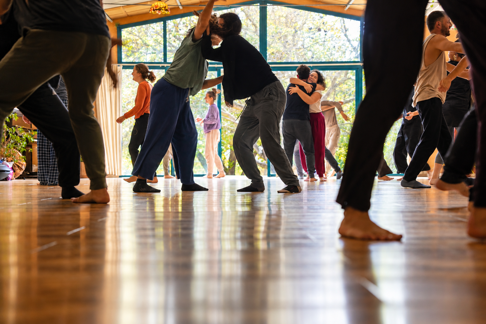

סדנאות PLAY-FIGHT
סדנת תנועה, מגע ומשחק, המאפשרת להתנסות ב־PLAY-FIGHT דרך מפגש עם כוח, התנגדות, גבולות והקשבה. להמשך קריאה...
פרטים טכנייםמתאים למתחילים ולמנוסים
⏳ משך: 3–4 שעות
🕒 המועדים הקרובים: 14.9, 5.10
📍 מיקום: סטודיו תנע, פרדס חנה
איל בנר מנחה סדנאות וקורסים בתנועה ומגע, חוקר ומלמד PLAY-FIGHT — דרך שמחברת בין משחק, קונטקט אימפרוביזציה ואומנויות לחימה. במפגש דרך הגוף נפתחת האפשרות לשחק עם כוח והתנגדות, לפגוש גבולות, להקשיב לעצמנו ולאחר, ולגלות דרכים חדשות להיות בקשר.
PLAY-FIGHT הוא מרחב של תנועה, מגע ומשחק, המחבר בין קונטקט אימפרוביזציה לאיכויות ועקרונות מעולם אומנויות הלחימה. דרך עבודה בזוגות ובקבוצה אנחנו חוקרים את המפגש שבין שיתוף פעולה לעימות, בין רכות לכוח, בין הקשבה להתנגדות ובין משחקיות לתחרות.
במקום להימנע מחיכוך, אנחנו לומדים להישאר איתו בסקרנות ובהקשבה. אפשר לדחוף ולהידחף, להוביל ולהתמסר, להתנגד, להתגושש, לרקוד ולשחק — ולגלות מה קורה לנו כשאנחנו פוגשים כוח, גבול, קונפליקט או את הרצון לנצח.
המטרה אינה ללמוד איך לנצח בקרב, אלא להשתמש במפגש הגופני כמרחב לחקירה. דרך הגוף אפשר לזהות דפוסים מוכרים, להתנסות בתגובות חדשות ולגלות עוד אפשרויות של נוכחות, חופש וקשר — עם עצמנו ועם מי שמולנו.
אפשר להתחיל את הדרך ב־PLAY-FIGHT בסדנה חד־פעמית או סדנת סופשבוע. להמשיך לתהליך בקורס או להעמיק בעבודה אישית. כל דרך מאפשרת חקירה אחרת של עצמנו — דרך הגוף, התנועה והמפגש.
סדנת תנועה, מגע ומשחק, המאפשרת להתנסות ב־PLAY-FIGHT דרך מפגש עם כוח, התנגדות, גבולות והקשבה. להמשך קריאה...
פרטים טכניים
סדרת מפגשים המאפשרת למידה והעמקה, לאורך זמן בתוך קבוצה קבועה.
פרטים טכנייםיצירת קשר ובדיקת התאמה
PLAY-FIGHT וקונטקט אימפרוביזציה — זמן מרוכז לתנועה, מגע, משחק והעמקה בתרגול ובמפגש.
פרטים טכניים
מרחב לתרגול קונטקט אימפרוביזציה דרך תנועה, מגע ואילתור — משחק עם משקל, הקשבה לגוף ולפרטנר ומפגש עם מה שקורה ברגע. פתוח למתחילים ולמנוסים.
פרטים טכניים
גישה ייחודית לעבודה אישית וזוגית, המשלבת עבודה רגשית דרך הגוף, שיחה, תנועה ומגע עם כלים מעולמות ה־PLAY-FIGHT, פסיכותרפיה דרך הגוף – אומניתרפי, קונסטלציה ופסיכודרמה.
פרטים טכניים
סמינר עומק מקצועי לעבודה רגשית דרך הגוף, בהנחיית אור קורן ואיל בנר.
פרטים טכניים
היי, אני איל בנר, בן 47, ומתגורר עם משפחתי בקיבוץ בית קשת שבגליל התחתון.
מאז שאני זוכר את עצמי, אני תלמיד של הגוף. כדורגל בקיבוץ, אומנויות לחימה, קונג־פו וטאי־צ׳י, ובהמשך גם קונטקט אימפרוביזציה ועולמות נוספים של תנועה ומפגש. במשך שנים הגוף היה עבורי מקום טבעי וחזק — מקום שידעתי לנוע בו, להקשיב לו וללמוד דרכו.
החיבור לעולם הרגשי היה עבורי פחות מובן מאליו. גדלתי עם תפיסה שבה לא לכל רגש ולא לכל ביטוי רגשי הייתה אותה לגיטימציה.
לקראת גיל 40 עברתי תקופה של משבר. התגרשתי, סגרתי עסק מצליח ופניתי למה שהיה חי בי מאז ומתמיד — החיבור לגוף. דווקא שם התחלתי לגלות שהגוף, שהיה חלק כל כך מרכזי בחיי, יכול להיות גם שער אל העולם הרגשי. לא רק גוף שנע, פועל ומתמודד — אלא גוף שמרגיש, זוכר, מחזיק ומספר.
דרך החיבור הזה נפתחה עבורי האפשרות לתת יותר מקום ולגיטימציה למה שאני מרגיש, לבטא אותו ולהישאר איתו — ולגלות עד כמה הגוף והנפש מדברים זה עם זה כל הזמן.
המפגש בין שני העולמות האלה הפך עם הזמן ללב הדרך המקצועית שלי. המשכתי ללמוד ולהעמיק בפסיכותרפיה דרך הגוף – אומניתרפי, בקונסטלציה משפחתית ובגישות נוספות.
היום אני מבקש ליצור מרחבים שבהם גוף ורגש יכולים להיפגש — ושבהם יש מקום גם לכוח וגם לרכות, גם להקשבה וגם לקונטרה, גם למשחק וגם לעומק.
מתוך החקירה הזאת צמחה גם העבודה שלי עם PLAY-FIGHT — מרחב שבו אפשר לפגוש דרך הגוף את הכוחות שפועלים בתוכנו ובינינו, לשחק איתם ולגלות מה מתאפשר.
אם משהו בדרך שלי פוגש אתכם, מסקרן אתכם או מרגיש מוכר — אני מזמין אתכם לבוא לפגוש אותי, ובמפגש הזה לפגוש גם את עצמכם — דרך הגוף, דרך המשחק ודרך מה שעוד רוצה להתגלות.

דרך פשוטה להתנסות ב־PLAY-FIGHT, לפגוש את השפה, את הקבוצה ואת העבודה דרך הגוף — בלי להתחייב לתהליך ארוך. מתאים לגילאי 18-70, גם ללא ניסיון קודם.
לבדיקת המפגש הקרובפעם ראשונה ב־PLAY-FIGHT? ←וידאו יכול להסביר בשתי דקות משהו שקשה לתאר בעמוד שלם.
הפעילות המרכזית מתקיימת בפרדס חנה ובצפון, ובנוסף איל מנחה מעת לעת סדנאות ומפגשים בתל אביב, בירושלים ובמקומות נוספים.
למיקומים ולפעילויות ←PLAY-FIGHT יכול להגיע גם אליכם — כסדנה, פעילות חד־פעמית או תהליך מתמשך, בהתאמה לקבוצה ולמרחב.
להזמנת PLAY-FIGHT ←אם משהו כאן מסקרן אותך — לא צריך לדעת בדיוק למה. אפשר פשוט לכתוב ולבדוק מה המפגש הבא שמתאים.
כתבו לאיל ב־WhatsApp · 050-366-5013